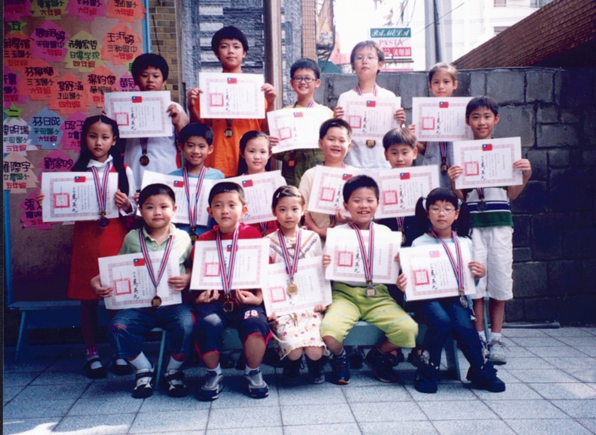

珠算小百科
珠心算是什麼？

所謂珠心算，即珠算式心算。珠算，是以算盤為工具，用來計算多位數的加、減、乘、除、四則計算、開方等題型。其運珠技巧有一定的規律及口訣，當使用者能熟練操作算盤，除了會快速的求出正確答案外，也能透過腦細胞的滋長，將算盤的盤式，檔次及珠子的浮動變化描繪到腦子裡，即好像在腦子裡有把「活算盤」，這種活算盤的影像，稱為「虛盤」。它透過知覺，形象，記憶等過程，在大腦裡來完成珠算運算，即我們所謂珠算式心算。
珠算式心算，熟練後計算速度要超過電子計算機，其速度之快非常驚人。往往只要聽到題目報數，或自己看到計算題型，算者即能將答數脫口而出，或立即寫出。所以珠算式心算是當今世界上最好的一種計算技術。
『相關文獻』
- 略論發展珠心算的方向 王宗江、趙孝廉、姚克賢先生撰
- 讓孩子聰明起來 珠心算開發兒童智能 黃繼魯先生撰
- 珠心算教育前景廣闊 朱希安先生撰
- 台灣心算教育的探討 廖正輝先生撰
學習珠算之目的
人類生活在世界上，於日常生活中隨時隨地都離不開「數」的觀念，因為不管其生活或繁或簡，一日也離不了數的觀念和計數的技能，我們想把日常生活上所遇到數的問題，能迅速解決，須先具有解決它的知能，所以我們要研究數理，應利用各種有利的工具。利用工具的方法很多，有筆算、機械算、尺算及珠算等。
算盤是我國發明的，它是應付日常生活上需要之工具－價廉物美，且運用與帶均很方便，凡是數的問題，用算盤來解決，非但簡便且正確。至於研究如何使用它－「算盤」的計算方法，就叫做「珠算」。
『相關文獻』
- 略論發展珠心算的方向 王宗江、趙孝廉、姚克賢先生撰
- 珠心算教育前景廣闊 朱希安先生撰
珠算的歷史
算盤是我國偉大發明之一，其為時甚早，論其時代說法不一，有黃帝時代、漢代、宋代、或說元代等．．．，依文獻記載起碼漢代已有算盤似無問題，因珠算之名，已見於後漢末年徐岳所著數術記遺一書中，有「．．．．珠算控帶四時經緯三才」一句。算盤在唐、宋時代僅是極少部份人士所用，流行為一般社會的計算工具，可以說是明代以後的事，明代更有珠算家吳敬著「九章算法比類大全」、王文素著「算學寶鑒」、程大位著「算法統宗」及「算法纂要」、朱載堉著「律學新說」等大師著書立說，珠算學術自此發揚光大。
珠算的學習有助於智力開發
一個人的智力發展與經常鍛練手指活動有密切關係，而操作算盤的動作則更快且更加細緻和微妙，更符合這個原則。國內外許多教育研究專家認為珠算式心算是珠算的高級階段，更有助於開發智力。
因為人類的大腦分為左右兩個半球。左半珠（左腦）主要是掌管說、寫、計算等有關推理、思考、判斷的理論功能。右半球（右腦）主要是掌管空間構造的描寫、模仿、想像等形態的知覺能力或有關情操的音樂能力。珠算式心算的過程，是一種綜合性的思考和運動的結合。計算時，需一邊瞬間記數，一邊虛珠映象，一邊模擬撥珠，一邊珠象內化，它激化思維力、記憶力、注意力、空間想像力等來完成運算任務，因此珠算式心算進行時，需要左右兩半腦協同活動。也就是說珠算式心算是開發智力的金鑰匙。
『相關文獻』
- 略論發展珠心算的方向 王宗江、趙孝廉、姚克賢先生撰
- 解開智慧之謎-高速珠心算2000 何錫權先生撰
- 珠心算過程腦機制初探及對其相關課程改革的分析 蔣志峰先生撰
- 讓孩子聰明起來 珠心算開發兒童智能 黃繼魯先生撰
- 珠算啟智功能的理論與實踐 楊渠弘先生撰
- 對兒童素質教育中運用珠心算開發智能的思考 陳大江、蘇樹軍先生撰
- 珠算啟迪兒童智力的奧秘 劉善堂、齊兆麟先生撰
學習珠心算最好的時機
珠心算的學習，原則上年齡愈低愈好，因為人類智力腦細胞的成長，三歲以前已完成70﹪，四歲至12歲成長至100﹪。珠心算的學習過程，須透過算盤操作的熟練，來激化影像的建立，而腦細胞的滋長，便是影像建立的原動力。反之，成人的腦細胞，因已定型，無法借助珠心算的學習，使自己智力、思維力、記憶力、想像力，更活絡成長，即無法產生心算的影像。
但在生理構造上，珠心算的學習是屬於技術性很強的操作學習，身體的協調與平衡是異常重要。過小學習，由於雙手小肌肉神經協調與感官平衡尚未定型，常有姿態不正或握筆不良等算廦產生，以市場上師資良莠不齊，教學觀念不正確引導，更可能破壞學習者的「數感」，將來要重新產生自信心，可能事倍功半。
因此，建議學習入門年齡以6足歲至9足歲之間最適宜，即為幼稚園大班至小學3年級。
珠算與心算的關係
在珠心算教學過程中，珠算是基礎，透過實珠（算盤）的操作，讓學習者了解四則計算的變化及方法。隨著技巧的熟練，學習者腦中的影像逐漸建立，透過影像的模擬操作（虛盤）即產生心算的功能，所以心算是珠算的高級顯現。珠算與心算就如同人之雙足，無法擇一獨行。
珠算的學習，可熟練掌握到計算能力及記憶能力。而記憶能力中的表象，便是心算過程中最重要的算珠圖像，計算過程中，算珠圖像，由靜珠瞬間不斷化成許多動珠運轉，以極短的時間內完成。所以愈是純熟的珠算技巧，愈發揮高超的心算程度。因此，在學習珠心算過程中，應珠算與心算並行不勃，珠算在先奠定基礎，心算在後瞬間表示。珠算在難度漸高時，會進展緩慢，心算卻能更通暢無礙，天馬行空。當心算的空間，逾越珠算的限制，即達學習者的最高境界。
加減法是什麼
加減法是各種計算的基本，無論乘、除或其他種種的應用計算，都不外是加減法的演變，日常生活應用尤多，故加減法之基本練習最為重要。加減法的基本練習，宜按照順序逐次反覆地練習，使全部運珠、運指法，皆能很自然地運用，這樣才算有良之基礎。加減法的基本練習有四種：1.連加法、2.倍加法、3.連續數加法、4.連減法。
乘算是什麼
乘算是求一個數的幾倍為多少的方法，也就是同一個數連加幾次的簡化算法，乘算種類可分為1.看頭乘法、2.破頭乘法、3.新頭乘法、4.連乘法等。
除算是什麼
除算是數學中最基本的運算之一，也是乘法的逆運算，已知兩個因數的積和其中的一個因數，求另一個因素的運算方法，叫做除法。簡單的說，把一個數分成若干等分，求一分是多少的方法；也就是求一個數是另一個數的多少倍的方法。
心算的特點
心算不必使用有形的計算工具，加上心算計算本身的神速，更可節省許多寶貴的時間、金錢，再加上對於腦力、智力．．．．等的訓練，更能顯示它無比的優越。現在將各種特點，列舉於下：1.用於日常計算迅速正確、2.工具無形、3.學習基礎國人已經具備、4.培養技能、提高智慧、5.節省計算程序
心算的意義
所謂心算法，即不用算盤或任何工具，直接用頭腦來計算的方法，亦可稱為無形的計算。其算法有筆算式心算及珠算式心算兩種，前者是把數目按照筆算的方式計算之方法。在小學算術課常計算心算練習或稱為能力心算，因計算時，全靠腦筋運算，甚費腦力且速度又慢，容易引起精神上的疲勞。後者是將算盤在腦裏想像出來，憑著盤面珠位的印象，而照實際運珠法在腦中計算數目的一種方法。
心算與珠算的關係
心算是珠算進一步的演變，在計算方法上，心算和珠算完全相同，兩者不同之處，心算靠腦筋裏直接記憶印象珠的形狀來計算；珠算則是靠腦筋的運算逐步顥示於盤面算珠的計算。但是，在學習過程中，一定要先學習珠算的運珠，也就是先學有珠算的根基，始能學習心算，因能熟練地記住運珠形態，再進而改變為記憶的方式。根據上述已知，我們歸納出下列幾點：1.學習心算必先學習珠算、2.心算時，腦中的印象珠就是算盤珠的影子、3.心算與珠算必須相輔相成
傳票算是什麼
所謂傳票者，為原始會計紀錄之一種。用以區分借貸、傳票各有關部門之經辦人員，作為登帳、收付及審核之書面憑證。此項具有帳單作用之記帳憑證，係按每一交易事項，所分割之最小分錄單位，亦即我國會計法所謂「會計憑證」之一種。
珠算科為配合工商金融各界日常之實務計算，特將傳票算列入學習課程，印製練習簿子，每頁印有5行若干位數目，類似各種不同的傳票，予以合計。其計算方法有三種；1為將傳票置於算盤之左邊計算，2為將傳票置於算盤之左上邊計算。3為將傳票置於算盤之右上邊。上列算法，翻頁傳票，一律採用拇、食指較理想。